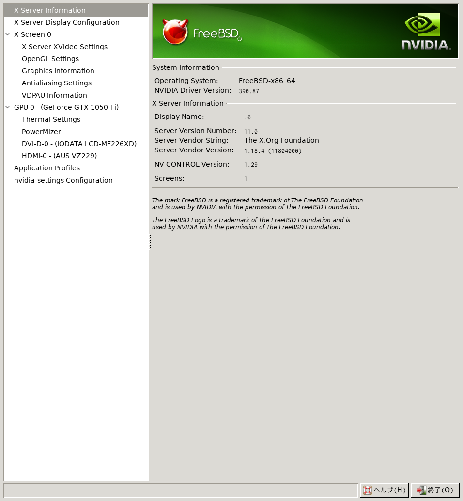
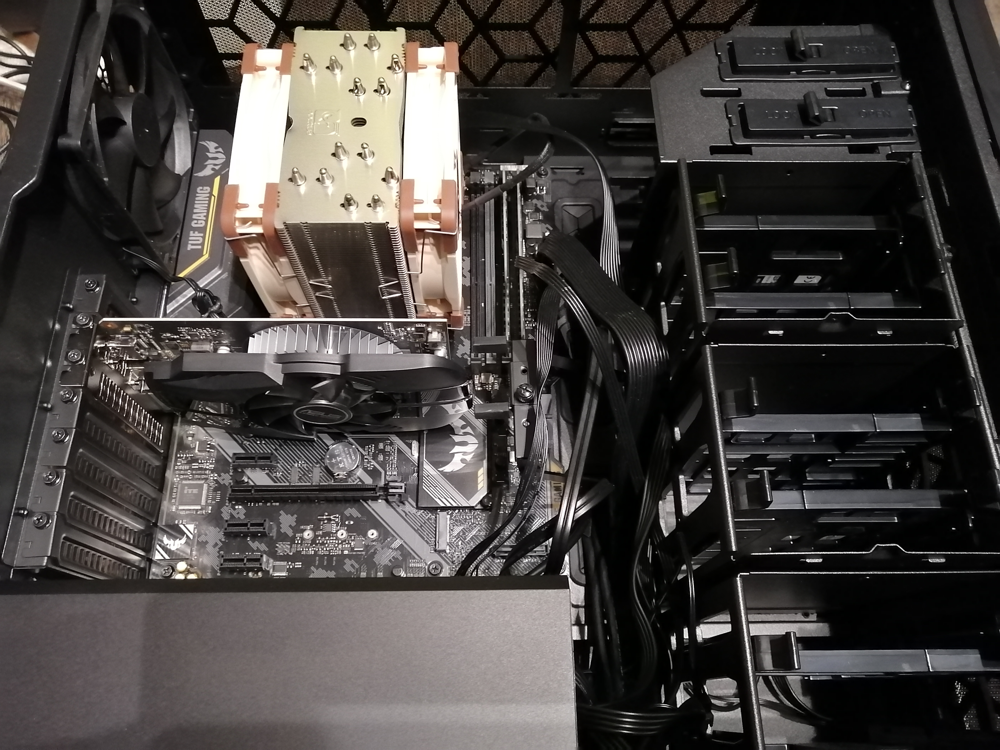
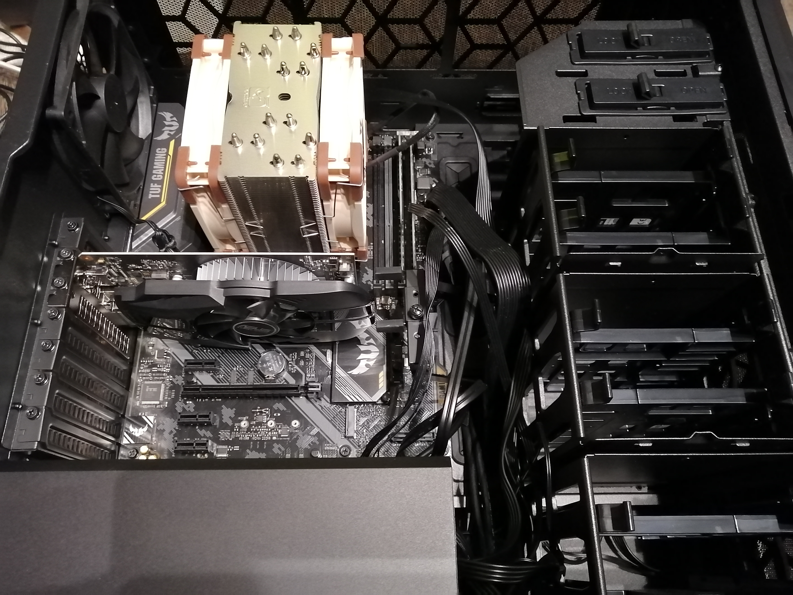

NetBSDビルド環境を自作パソコンで作る
いままでプライベートでの開発はすべてThinkPad X230iを使っていました。中古のノートパソコンでもNetBSDは特に問題なく動作しますが、NetBSDのソースツリーをビルドしたりpkgsrcからパッケージをインストールしたりするときにどうしても時間がかかり不便を感じていました。
計算資源の非力さを補うためにクラウドサービスを使って一時的にハイパワーなマシンを借りるということもしました。Webコンソールへログインするのが面倒なことから、サービスのAPIを叩いてCUIでマシンの起動や停止、性能の変更をおこなうプログラムをPythonで実装しさえもしました。このやり方は高価なマシンを所有する必要がなく経済的だったのですが、NetBSD-currentのHEADをクラウド上のマシンでも追いかけるのが面倒で段々と使わなくなりました。
AMDのRyzenが高速なわりに安価で、build.shの実行がすぐ終わるという話は前から耳にしていました。くわえて個人的には自作パソコンを作ったことがなく、興味はあったのですが特にこれといったモチベーションは湧かずにいました。クラウドでのビルドマシン運用が面倒になってきたのをきっかけに、勉強ついでに自作パソコンを作りそれにNetBSDをインストールして日頃使いのマシン兼ビルドマシンとして運用しようと思い立ちました。
マシン構成
初めて自作パソコンに挑戦することもあり、ツクモの店員さんに予算はおおよそ10万円ほどですと伝えてパーツの見積もりをもらうことにしました。ゲームをするわけではないのでグラフィックボードは安くてもよいのですが、頻繁にビルドする都合上CPUの熱は抑えたいのでケースとCPUクーラは評判が良いものをお願いしました。それで、集まったものがこちらです。
| 構成要素 | 名前 |
| CPU | AMD Ryzen 3600X |
| マザーボード | ASUS TUF B450-PRO GAMING |
| 電源 | SILVER STONE ST75F-GS |
| CPUクーラ | noctua NN-U12A |
| ケース | Cooler Master MasterBox CM694 |
| ディスク | crucial MX500 |
| メモリ | crucial 32BG KIT DESKTOP DDR4-3200 UDIMM |
| グラフィックボード | 玄人志向 RD-RX560-E2GB |
端から確定していたのはCPUとマザーボードだけで、あとは店員さんからの説明とおすすめを聞いたうえで僕が選びました。見積もりよりコンサルタントと言ったほうがより正確でしょうか。ポイントの差し引きをして工具セットも付けた結果、計104,190円となりました。即決です。
ザックにパーツを入れ、入り切らないパーツは紙袋に、ケースは外装箱にプラスチックの取っ手をつけてもらい家まで持ち帰りました。両手がふさがっているのとPCケースの大きさから、改札を通るのには苦労しました。
トラブル
メモリを半挿し
いざパーツを開封し組み立てたはいいものの、電源を入れモニタに接続しても"no input signal"と表示されたきりなにも映りませんでした。グラフィックボードの接触不良を疑ったり、CPUの挿し方がまずかったのかなと思い組み立て直してからまた電源を入れたりしたものの、改善の兆しはありませんでした。
調べるとパソコンのパーツの中で壊れやすく相性の問題もあるパーツはマザーボードとメモリそしてグラフィックボードらしく、相性や初期不良を疑ってみることにしました。そこで後日、ツクモに相性保証をつけていたマザーボードとメモリを持ち込み、動作チェックを依頼したのですが結果は「問題なし」とのことでした。
帰り際に「メモリスロットの片側にだけツメがあるタイプは、ツメが無い側のメモリがしっかり挿さっているか確認したほうがいいですよ」と教えてもらいました。持ち込んだパーツ以外の初期不良や相性もあるかもしれないし……という不安と共に帰宅し、ものは試しとちょっと強めに力を入れメモリを挿し込んでみると、前は聞かなかった「カチリ」という音が。確信を胸に電源を入れてみると、みごとBIOS画面が出てきたのです。初期不良や相性云々はすべて思い違いで、単なる組み立てミスだったわけでした。
Xが立ち上がらない
主な用途はビルドと言いえど日頃使いのマシンとしても使うわけですから、Xは立ちあがってもらわないと困ります。そして困りました。購入したRadeon RX560はNetBSDでは使えなさそうだったのです。amdgpuを有効にしたカーネルをビルドし、x11/xf86-video-amdgpuをインストールしてX -configureしてもno screens foundと出てXが立ち上がりませんでした。
たしかにradeon(4)にはRX560と書いてはいません。amdgpu(4)にも特に型番は明記されていません。自らの調査不足を反省し、今度はx11/xf86-video-nouveauのnouveau(4)にしっかり書かれているNVIDIA GeForce 1050Tiを購入しました。nouveauを有効にしたカーネルをビルドして再度挑戦することに。
ところが、これでも同じくno screens foundエラーが出てXが立ち上がりませんでした。Ryzen 5 3600Xは内蔵GPUが無いタイプのCPUなので、ここで諦めるとGUIを出せずに単なるビルドマシンとして運用せざるを得ません。
結局どうしたか？オチとしてはNetBSDの代わりにFreeBSDをインストールし、NetBSD特有の処理をしたいときはbhyveを使い仮想マシン上のNetBSDを触ることに決めました。本当はネイティブなNetBSDをデスクトップ環境として使いたかったのですが最終的に妥協したということです。FreeBSDはnvidia-driver-390.87_3パッケージを入れ、問題なく動いています。
一応、最後のあがきとしてNVIDIAの公式サイトからLinux用のドライバをダウンロードし、Linuxエミュレーションでそのドライバを動かそうともしました。FreeBSDのグラフィック系のドライバはLinuxエミュレーションで動くものもあるというのをヒントにしたのです。しかし、startxした時点でNVIDIAのドライバがLinuxの共有ライブラリを読み込んでくれず、僕がやってみた範囲では失敗に終わりました。結構よさそうなアイデアだと思ったのですが残念です。もしかすると工夫次第でどうにかなったのかもしれませんが、もし同じ構成でXまで動かせた人がいればやり方を教えてください。
build.shがどれくらい速く終わるか？
ベンチマークとして、ネイティブなNetBSD/amd64システムでbuild.shからi386バイナリをクロスビルドしました。ツールチェイン、GENERICカーネル、ディストリビューションのビルド結果は以下のとおりです。
===> Summary of results:
build.sh command: ./build.sh -O /zpool/obj -R /zpool/releasedir -T /zpool/tools -V MKDEBUG=yes -V MKDEBUGLIB=yes -V MKLINT=yes -X /home/uki/src/cvs.NetBSD.org/xsrc -x -j12 -U -a i386 -m i386 -D /zpool/destdir/i386 tools
build.sh started: Sat Dec 28 18:01:32 JST 2019
NetBSD version: 9.99.30
MACHINE: i386
MACHINE_ARCH: i386
Build platform: NetBSD 9.99.30 amd64
HOST_SH: /bin/sh
MAKECONF file: /etc/mk.conf
TOOLDIR path: /zpool/tools
DESTDIR path: /zpool/destdir/i386
RELEASEDIR path: /zpool/releasedir
Updated makewrapper: /zpool/tools/bin/nbmake-i386
Tools built to /zpool/tools
build.sh ended: Sat Dec 28 18:06:19 JST 2019
===> .===> Summary of results:
build.sh command: ./build.sh -O /zpool/obj -R /zpool/releasedir -T /zpool/tools -V MKDEBUG=yes -V MKDEBUGLIB=yes -V MKLINT=yes -X /home/uki/src/cvs.NetBSD.org/xsrc -x -j12 -U -a i386 -m i386 -D /zpool/destdir/i386 kernel=GENERIC
build.sh started: Sat Dec 28 19:04:05 JST 2019
NetBSD version: 9.99.30
MACHINE: i386
MACHINE_ARCH: i386
Build platform: NetBSD 9.99.30 amd64
HOST_SH: /bin/sh
MAKECONF file: /etc/mk.conf
TOOLDIR path: /zpool/tools
DESTDIR path: /zpool/destdir/i386
RELEASEDIR path: /zpool/releasedir
Updated makewrapper: /zpool/tools/bin/nbmake-i386
Building kernel without building new tools
Building kernel: GENERIC
Build directory: /zpool/obj/sys/arch/i386/compile/GENERIC
Kernels built from GENERIC:
/zpool/obj/sys/arch/i386/compile/GENERIC/netbsd
build.sh ended: Sat Dec 28 19:05:37 JST 2019
===> .===> Summary of results:
build.sh command: ./build.sh -O /zpool/obj -R /zpool/releasedir -T /zpool/tools -V MKDEBUG=yes -V MKDEBUGLIB=yes -V MKLINT=yes -X /home/uki/src/cvs.NetBSD.org/xsrc -x -j12 -U -a i386 -m i386 -D /zpool/destdir/i386 distribution
build.sh started: Sat Dec 28 18:10:10 JST 2019
NetBSD version: 9.99.30
MACHINE: i386
MACHINE_ARCH: i386
Build platform: NetBSD 9.99.30 amd64
HOST_SH: /bin/sh
MAKECONF file: /etc/mk.conf
TOOLDIR path: /zpool/tools
DESTDIR path: /zpool/destdir/i386
RELEASEDIR path: /zpool/releasedir
Updated makewrapper: /zpool/tools/bin/nbmake-i386
Successful make distribution
build.sh ended: Sat Dec 28 18:51:20 JST 2019
===> .CPUを全開で使うと、ツールチェインのビルドは約5分、GENERICカーネルのビルドは1分未満、ディストリビューションのビルドは約41分で終わってしまいました。ThinkPadでビルドしていた頃と比べればどれだけ時間の節約になっているか、論ずるまでもありません。
おわりに
 

そういうわけで僕の初自作パソコンはソフトの部分で失敗というか妥協に終わってしまったのですが、それでもデスクトップ環境はいつも以上に快適に動いていますし、ビルドも従来よりかなり速いためそこそこ満足しています。NetBSDはクロスビルドができるので、OSがNetBSDでなくてもNetBSDのビルド自体はできてしまいます。たとえばFreeBSD-amd64上でNetBSD-sparc64のビルドができてしまうのです。
パーツの組み立てはプラスドライバ一本で終わり、思っていたよりも簡単でした。一番難しいと感じた作業を挙げるとすれば、フロントパネル用のピンヘッダをマザーボードに取り付ける作業でしょうか。マザーボードの説明書とにらめっこしながらどこになにを挿すか慎重に探りました。
「自作パソコンを作ればパソコンの内部が理解できる」とまでは言いたくありませんが、パソコンがどういう要素（パーツ）から成っているのか程度は理解でき、達成感や満足を得られるのは間違いないでしょう。今後はディスクを増やしてZFSのRAIDを組んだりしてみようかなと考えています。